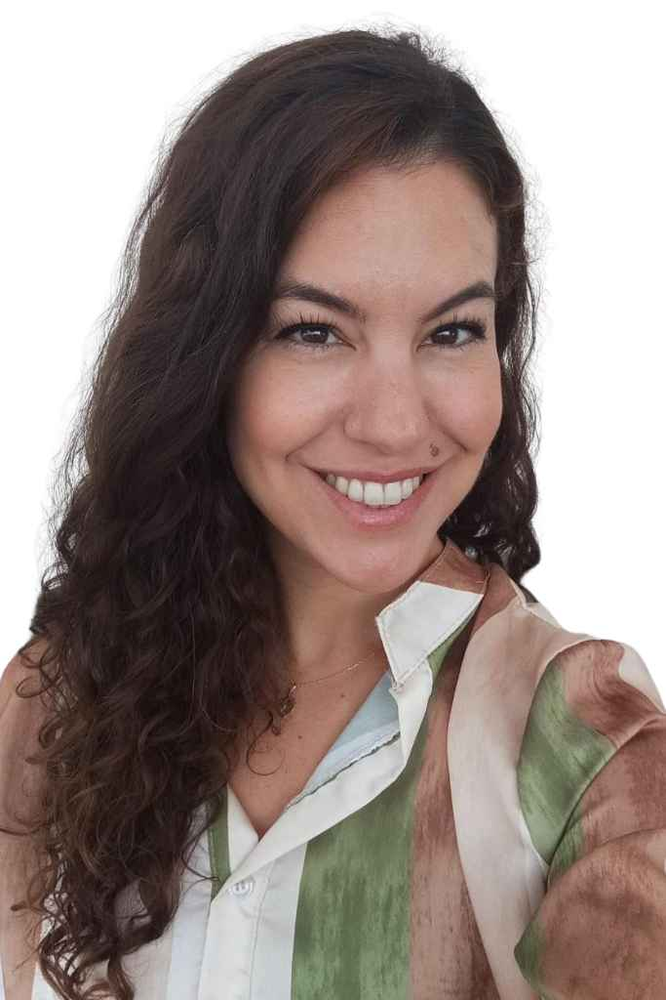

Soy Laura Fajardo, Terapeuta Ocupacional especializada en neurodivergencia
Terapia Ocupacional + Psiconeuroinmunología • Sesiones 100% online
10+ años acompañando a familias y adultos
Años de experiencia clínica
Familias y adultos acompañados
Tasa de mejora en clientes
Si tu hijo adolescente lucha con neurodivergencia, migrañas, dificultades sensoriales o estrés académico. Entendemos lo que significa ser padre de un hijo diferente.
Migrañas frecuentes, insomnio, reactividad sensorial, estrés crónico. Abordamos la raíz del problema, no solo los síntomas.
Si eres adulto neurodivergente (25-45) buscas entenderte: manejo del estrés, regulación del sueño, migraña, participación social.
15 minutos GRATIS vía WhatsApp. Cuéntame qué te trae aquí, sin compromiso.
Análisis profundo de sensorialidad, sueño, estrés y contexto. Entendemos la raíz.
Estrategias prácticas basadas en OT + PNI. Herramientas que funcionan en casa y colegio.
Sesiones semanales/quincenales. Seguimiento continuo, ajustes, progreso medible.
Soy Terapeuta Ocupacional con especialización en Psiconeuroinmunología (PNI) e Integración Sensorial. Mi pasión es ayudar a personas neurodivergentes a entenderse mejor.
Durante 10+ años he acompañado a familias y adultos que creían tener "problemas de comportamiento" o "falta de fuerza de voluntad"... cuando en realidad eran patrones sensoriales, regulación del sistema nervioso y contextos no adaptados.
Mi enfoque: Si entiendes CÓMO procesa tu mente y cuerpo, puedes diseñar una vida que funcione para ti.

Tu consulta inicial de 15 minutos es GRATIS. Sin compromiso. Solo para conocernos.